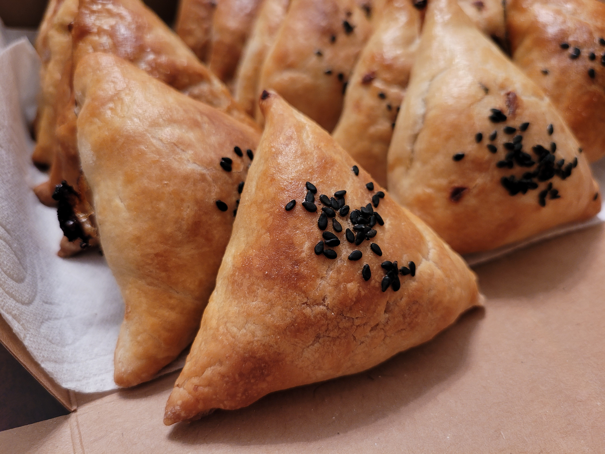

Samsa

Ingredients:
- 500 gr flour
- 260 gr water
- 1 tsp salt
- 120 gr butter
Filling:
- 600 gr beef
- 3-4 onion
- 1 tsp salt
- 1 tsp coriander
- 0.5 tsp zira
- 1 tsp dried garlic
- 1 tsp pepper
- a little hot pepper
Direction:
- Sift the flour through the sieve into a mixing bowl. Add salt to a cup of warm water and mix until dissolved. Combine the water with flour and kneed the dough to form a dough ball. It took 10 minutes in the stand mixer.
- Cover the dough ball and leave to rest for 30 min. Once rested, sprinkle the working surface with a little flour and roll the dough into a thin rectangular sheet approximately 2-3mm or ⅛ inch thick.
- Cover the sheet with melted ghee. Starting on one edge, roll the dough tightly like a cigar. Cut the roll into 18 equal pieces. Press each piece with palm of your hand to make a patty. Stack patties with parchment paper between them in an airtight container, and place in the fridge to chill for at least 3 hours or overnight.
- Cut everything into cubes 5mmx5mm. Combine all the ingredients and mix well. Leave to rest for at least 30 minutes.
- Take the dough patties out of the fridge and roll each patty out into a thin circle sheet using a rolling pin. Roll on one side only and never flip the dough. Divide the filling between each circle evenly. Bring two opposite sides together making a triangle. Pinch the corners. Then bring the bottom part and pinch together again. (Refer to picture guide for visual help.) Put the samsa on the baking sheet lined with parchment paper seem side down.
- Cover with beaten egg yolk and sprinkle with sesame seeds, if using. Bake at 385 F for 30 minutes or until golden.